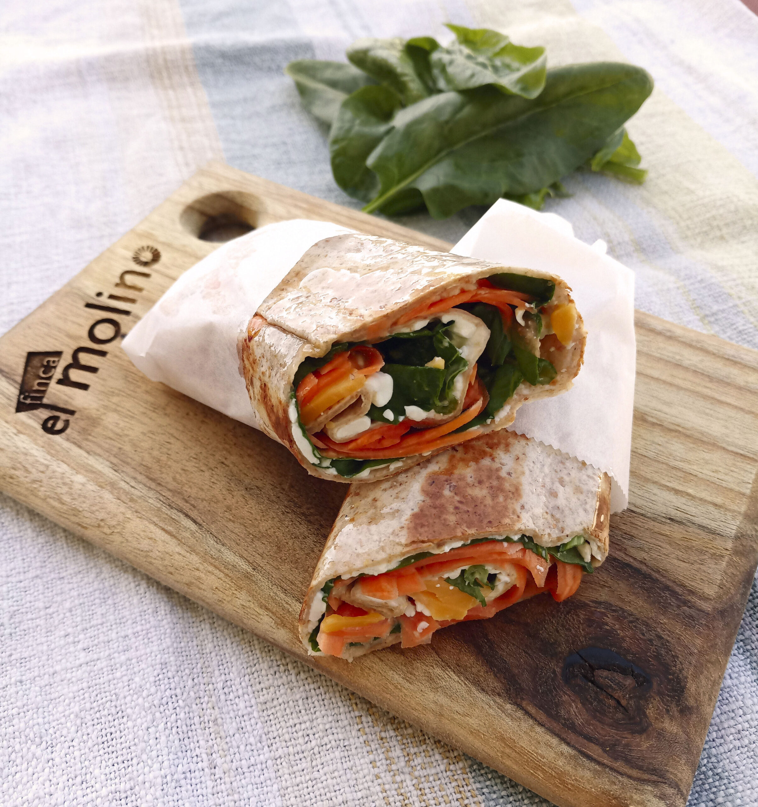

Ingredientes
- 1 tortilla de trigo
- Lechuga
- Tomate en rodajas
- Aguacate en rodajas
- Hummus
- Pepino en rodajas
- Zanahoria rallada
Instrucciones
- Extiende la tortilla de trigo sobre una superficie plana.
- Unta una capa de hummus sobre la tortilla.
- Agrega las rodajas de tomate, pepino y aguacate.
- Coloca la lechuga y la zanahoria rallada.
- Enrolla la tortilla, asegurándote de envolver bien los ingredientes.
- Corta el wrap por la mitad y sirve inmediatamente.